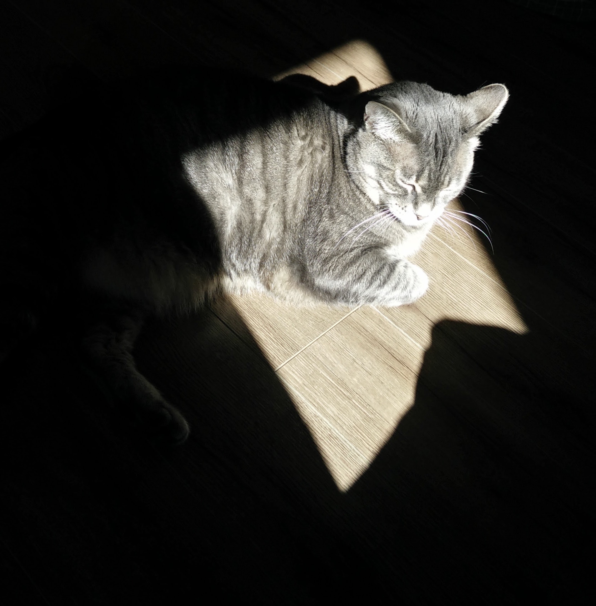

Work: Zulily
Code Fellows program
(in progress)
ATA in Computer Information Systems: Information Security and Digital Forensics
(in progress)
Associate in Arts and Sciences; Certificate – Accounting Assistant
Eleven Artists I Love
though it may seem otherwise, these are in no particular order... after the first three
- Billy Joel
- Creedence Clearwater Revival
- Black Keys
- Muse
- Styx
- Foreigner
- Boston
- Chubby Checker
- Salvador Dalí
- The Heavy
- The Pink Spiders

Would I rather be using Windows?
Yes. Yes I would.
Do I have any pets?
Yup. One cat named Puppy.
Do I hate the cold?
So much. Unless I'm indoors, oddly.
What season was I born in?
Summer! Yay for not having to go to school on your birthday!
Which of these is NOT a place I have lived?
California
Louisiana
Florida
India
Connecticut
Louisiana, though I'm thinking about moving there one day.
What kind of music do I listen to?
A lot of different kinds! Alternative rock, classic rock, hip-hop/rap, jazz, and lots of other things.
How many times have I moved?
At least 12, but I've only made about six or seven major moves.
I've lived in every "corner" of the country.